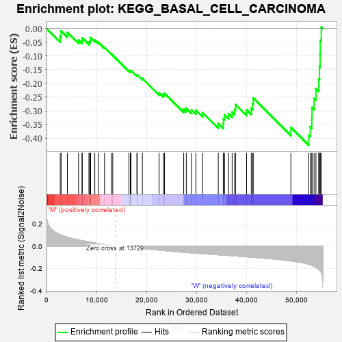
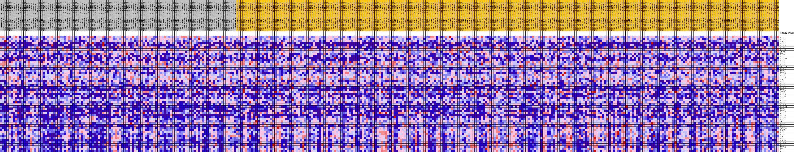
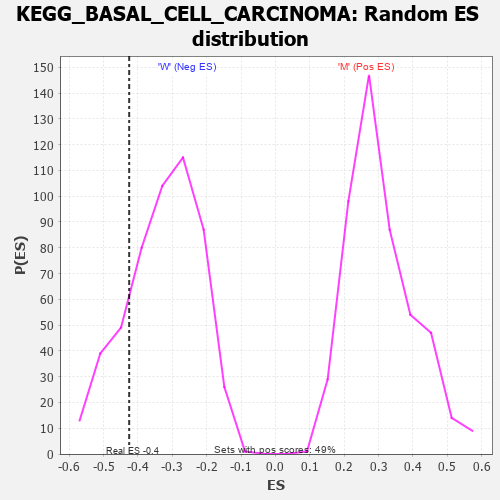

| Dataset | MUC16.MUC16.cls#M_versus_W.MUC16.cls#M_versus_W_repos |
| Phenotype | MUC16.cls#M_versus_W_repos |
| Upregulated in class | W |
| GeneSet | KEGG_BASAL_CELL_CARCINOMA |
| Enrichment Score (ES) | -0.42559743 |
| Normalized Enrichment Score (NES) | -1.3031949 |
| Nominal p-value | 0.17898832 |
| FDR q-value | 1.0 |
| FWER p-Value | 0.937 |

| PROBE | DESCRIPTION (from dataset) | GENE SYMBOL | GENE_TITLE | RANK IN GENE LIST | RANK METRIC SCORE | RUNNING ES | CORE ENRICHMENT | |
|---|---|---|---|---|---|---|---|---|
| 1 | DVL1 | na | 2745 | 0.101 | -0.0273 | No | ||
| 2 | FZD5 | na | 2923 | 0.098 | -0.0087 | No | ||
| 3 | APC2 | na | 4181 | 0.080 | -0.0138 | No | ||
| 4 | WNT11 | na | 6409 | 0.055 | -0.0420 | No | ||
| 5 | WNT7B | na | 7117 | 0.048 | -0.0441 | No | ||
| 6 | WNT2 | na | 7142 | 0.048 | -0.0339 | No | ||
| 7 | GSK3B | na | 8490 | 0.037 | -0.0500 | No | ||
| 8 | AXIN1 | na | 8675 | 0.035 | -0.0455 | No | ||
| 9 | BMP4 | na | 8799 | 0.034 | -0.0401 | No | ||
| 10 | WNT1 | na | 8805 | 0.034 | -0.0325 | No | ||
| 11 | WNT10A | na | 9663 | 0.027 | -0.0419 | No | ||
| 12 | FZD9 | na | 10345 | 0.022 | -0.0493 | No | ||
| 13 | TP53 | na | 11609 | 0.014 | -0.0692 | No | ||
| 14 | DVL2 | na | 12942 | 0.005 | -0.0922 | No | ||
| 15 | TCF7L2 | na | 13256 | 0.003 | -0.0972 | No | ||
| 16 | WNT5A | na | 16494 | -0.008 | -0.1541 | No | ||
| 17 | WNT3 | na | 16797 | -0.009 | -0.1575 | No | ||
| 18 | WNT8B | na | 16799 | -0.009 | -0.1555 | No | ||
| 19 | FZD6 | na | 16835 | -0.010 | -0.1540 | No | ||
| 20 | STK36 | na | 16905 | -0.010 | -0.1530 | No | ||
| 21 | APC | na | 18080 | -0.016 | -0.1707 | No | ||
| 22 | WNT4 | na | 18134 | -0.016 | -0.1680 | No | ||
| 23 | FZD3 | na | 19180 | -0.021 | -0.1822 | No | ||
| 24 | BMP2 | na | 22534 | -0.036 | -0.2349 | No | ||
| 25 | WNT16 | na | 23337 | -0.040 | -0.2406 | No | ||
| 26 | WNT3A | na | 23617 | -0.041 | -0.2366 | No | ||
| 27 | SUFU | na | 27452 | -0.055 | -0.2938 | No | ||
| 28 | FZD10 | na | 27971 | -0.057 | -0.2904 | No | ||
| 29 | WNT9A | na | 29025 | -0.061 | -0.2960 | No | ||
| 30 | SHH | na | 29892 | -0.064 | -0.2975 | No | ||
| 31 | CTNNB1 | na | 31234 | -0.068 | -0.3067 | No | ||
| 32 | FZD2 | na | 34365 | -0.078 | -0.3461 | No | ||
| 33 | WNT5B | na | 35369 | -0.081 | -0.3463 | No | ||
| 34 | WNT10B | na | 35414 | -0.081 | -0.3291 | No | ||
| 35 | WNT6 | na | 35632 | -0.082 | -0.3149 | No | ||
| 36 | WNT7A | na | 36430 | -0.084 | -0.3106 | No | ||
| 37 | GLI2 | na | 37143 | -0.086 | -0.3044 | No | ||
| 38 | WNT8A | na | 37669 | -0.088 | -0.2943 | No | ||
| 39 | AXIN2 | na | 37816 | -0.088 | -0.2773 | No | ||
| 40 | FZD7 | na | 40034 | -0.096 | -0.2962 | No | ||
| 41 | TCF7 | na | 40967 | -0.099 | -0.2911 | No | ||
| 42 | DVL3 | na | 41260 | -0.100 | -0.2741 | No | ||
| 43 | HHIP | na | 41364 | -0.100 | -0.2537 | No | ||
| 44 | TCF7L1 | na | 48900 | -0.132 | -0.3607 | No | ||
| 45 | PTCH1 | na | 52486 | -0.163 | -0.3894 | Yes | ||
| 46 | FZD1 | na | 52774 | -0.167 | -0.3576 | Yes | ||
| 47 | FZD8 | na | 53091 | -0.171 | -0.3252 | Yes | ||
| 48 | SMO | na | 53127 | -0.172 | -0.2875 | Yes | ||
| 49 | FZD4 | na | 53541 | -0.180 | -0.2549 | Yes | ||
| 50 | PTCH2 | na | 53909 | -0.189 | -0.2195 | Yes | ||
| 51 | WNT2B | na | 54454 | -0.206 | -0.1835 | Yes | ||
| 52 | GLI3 | na | 54624 | -0.214 | -0.1389 | Yes | ||
| 53 | WNT9B | na | 54741 | -0.220 | -0.0921 | Yes | ||
| 54 | LEF1 | na | 54771 | -0.222 | -0.0432 | Yes | ||
| 55 | GLI1 | na | 54972 | -0.235 | 0.0053 | Yes |

